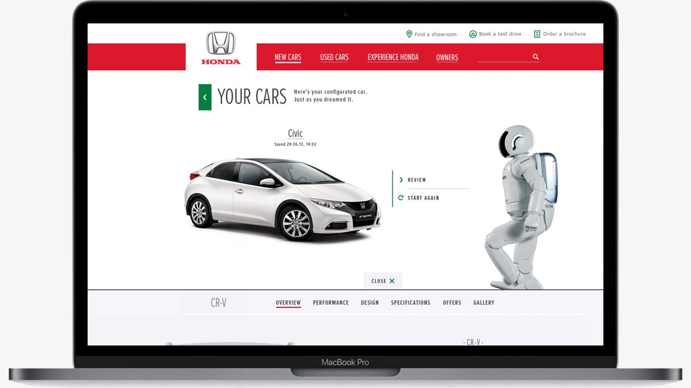
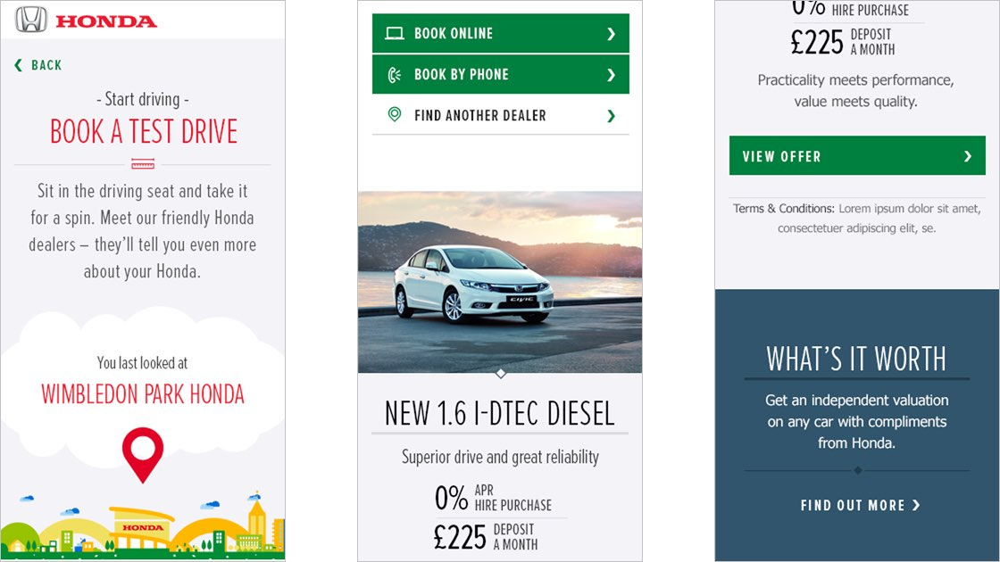
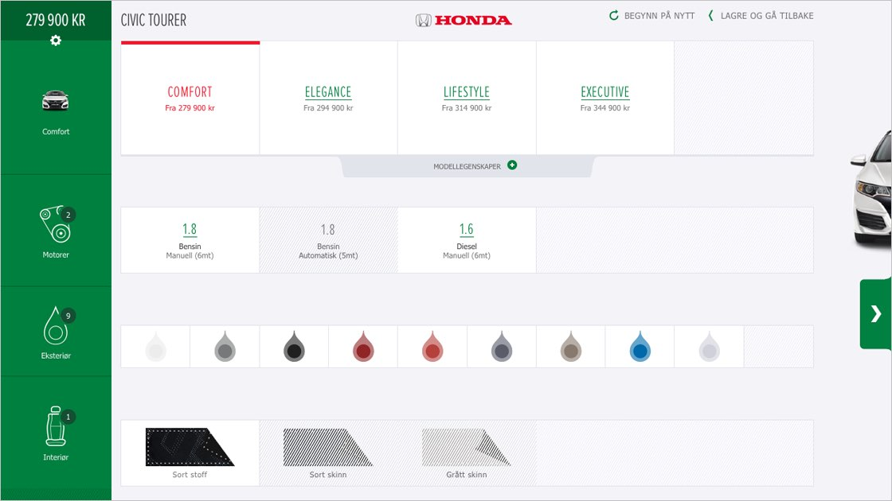
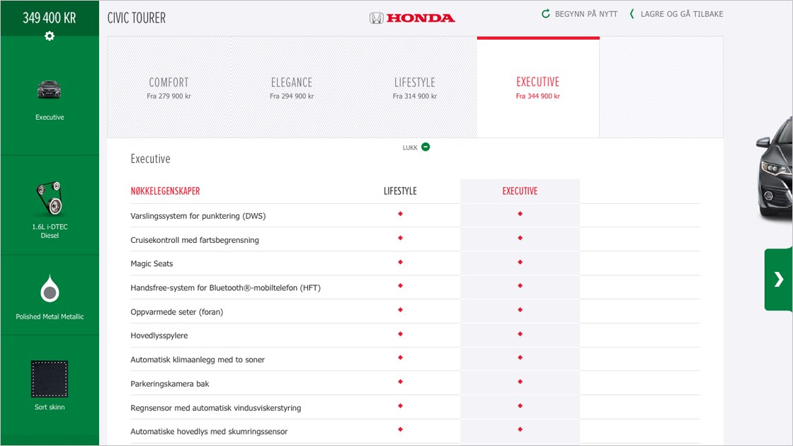

Providing users with the tools to build and personalise their own car

The navigation allowed users to edit and share multiple car configuartions, Asimo the robot, added personality to the interfaceInitial sketches for car configuratorA paper prototype to understand dependenciesA users car configuration generated a unique URL, which could be shared and accessed at any point

The car configurator provided a great platform for personalisation through location and financial offersDesigning a non-linear process was important, as this gave the user maximum freedom around choices whilst understanding the dependenciesThe responsive nature of the interface

An integrated approach that doesn't force the user to make the same selections twiceThe interface needed to work for multiple languages

Tools which allowed users to quickly compare the different model specificationsIconography added warmth and personality to a functional interface